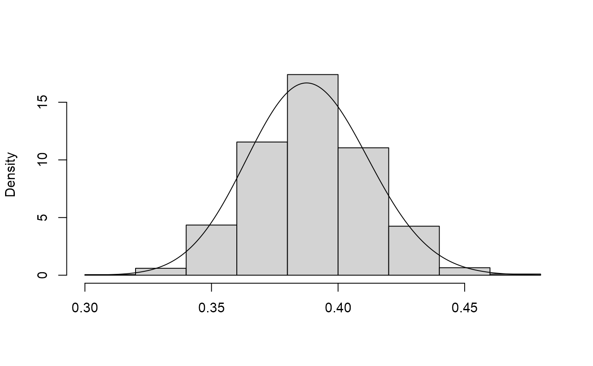
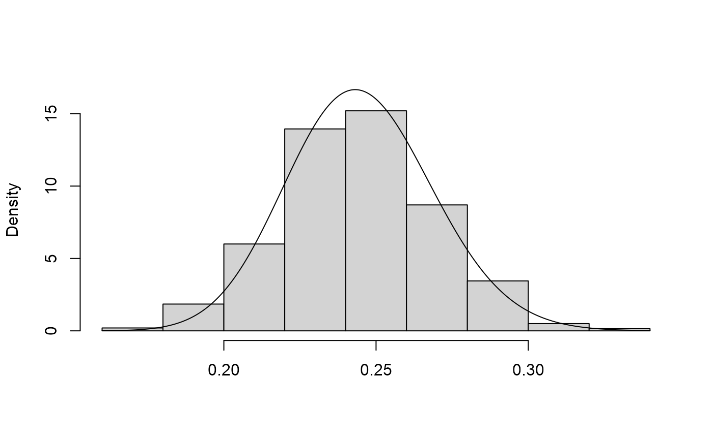

Uses the rust package to simulate from the posterior
distribution of the extremal index \(\theta\) based on the D-gaps model
for threshold interexceedance times of Holesovsky and Fusek (2020). We refer
to this as the \(D\)-gaps model, because it uses a tuning parameter
\(D\), whereas the related \(K\)-gaps model of Suveges and Davison
(2010) has a tuning parameter \(K\).
Usage
dgaps_post(
data,
thresh,
D = 1,
n = 1000,
inc_cens = TRUE,
alpha = 1,
beta = 1,
param = c("logit", "theta"),
use_rcpp = TRUE
)Arguments
- data
A numeric vector or numeric matrix of raw data. If
datais a matrix then the log-likelihood is constructed as the sum of (independent) contributions from different columns. A common situation is where each column relates to a different year.If
datacontains missing values thensplit_by_NAsis used to divide the data further into sequences of non-missing values, stored in different columns in a matrix. Again, the log-likelihood is constructed as a sum of contributions from different columns.- thresh
A numeric scalar. Extreme value threshold applied to data.
- D
A numeric scalar. The censoring parameter \(D\), as defined in Holesovsky and Fusek (2020). Threshold inter-exceedances times that are not larger than
Dunits are left-censored, occurring with probability \(\log(1 - \theta e^{-\theta d})\), where \(d = q D\) and \(q\) is the probability with which the threshold \(u\) is exceeded.- n
A numeric scalar. The size of posterior sample required.
- inc_cens
A logical scalar indicating whether or not to include contributions from right-censored inter-exceedance times, relating to the first and last observations. It is known that these times are greater than or equal to the time observed. If
datahas multiple columns then there will be right-censored first and last inter-exceedance times for each column. See also the Details section ofdgaps.- alpha, beta
Positive numeric scalars. Parameters of a beta(\(\alpha\), \(\beta\)) prior for \(\theta\).
- param
A character scalar. If
param = "logit"(the default) then we simulate from the posterior distribution of \(\phi = \log(\theta / (1-\theta))\) and then transform back to the \(\theta\)-scale. Ifparam = "theta"then we simulate directly from the posterior distribution of \(\theta\), unless the sample D-gaps are all equal to zero or all positive, when we revert toparam = "logit". This is to avoid the possibility of sampling directly from a posterior with mode equal to 0 or 1.- use_rcpp
A logical scalar. If
TRUE(the default) the rust functionru_rcppis used for posterior simulation. IfFALSEthe (slower) functionruis used.
Value
An object (list) of class "evpost", which has the same
structure as an object of class "ru" returned from
ru.
In addition this list contains
call: The call todgaps().model: The character scalar"dgaps".thresh: The argumentthresh.ss: The sufficient statistics for the D-gaps likelihood, as calculated bydgaps_stat.
Details
A beta(\(\alpha\), \(\beta\)) prior distribution is used for
\(\theta\) so that the posterior from which values are simulated is
proportional to
$$\theta ^ {2 N_1 + \alpha - 1}
(1 - \theta e^{-\theta d}) ^ {N_0 + \beta - 1}
\exp\{- \theta q (I_0 T_0 + \cdots + I_N T_N)\}.$$
See dgaps_stat for a description of the variables
involved in the contribution of the likelihood to this expression.
The ru function in the rust
package simulates from this posterior distribution using the
generalised ratio-of-uniforms distribution. To improve the probability
of acceptance, and to ensure that the simulation will work even in
extreme cases where the posterior density of \(\theta\) is unbounded as
\(\theta\) approaches 0 or 1, we simulate from the posterior
distribution of
\(\phi = \log(\theta / (1-\theta))\)
and then transform back to the \(\theta\)-scale.
References
Holesovsky, J. and Fusek, M. Estimation of the extremal index using censored distributions. Extremes 23, 197-213 (2020). doi:10.1007/s10687-020-00374-3
Suveges, M. and Davison, A. C. (2010) Model misspecification in peaks over threshold analysis, The Annals of Applied Statistics, 4(1), 203-221. doi:10.1214/09-AOAS292
See also
ru for the form of the object returned by
dgaps_post.
kgaps_post for Bayesian inference about the
extremal index \(\theta\) using the \(K\)-gaps model.
Examples
# Newlyn sea surges
thresh <- quantile(newlyn, probs = 0.90)
d_postsim <- dgaps_post(newlyn, thresh)
plot(d_postsim)

### Cheeseboro wind gusts
d_postsim <- dgaps_post(exdex::cheeseboro, thresh = 45, D = 3)
plot(d_postsim)
